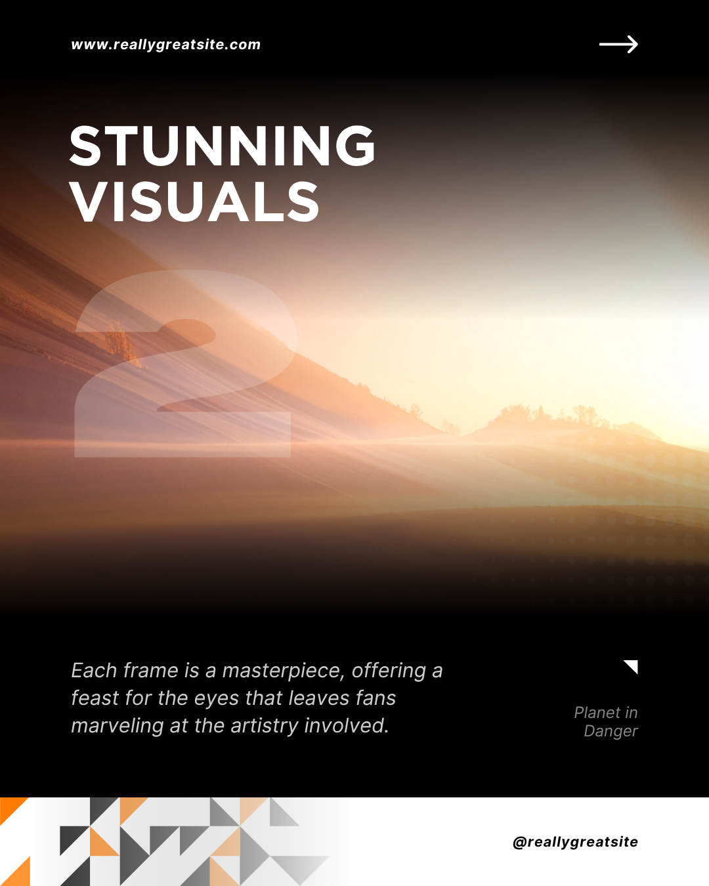

[ STATUS: STAGING ACTIVE ]
Cyberpunk Beta Test Grid.
Welcome to the experimental staging ground for readmystuff.com. Direct peer-to-peer data transfers, decentralized content manifests, and raw algorithmic bypass protocols in testing.
SYSTEM CONFIGURATION
● ONLINE
> Target Domain: readmystuff.com
> Pipeline: Canva → VS Code → Pages
> Environment: Cloud-to-Local Bridge
> Encryption: Active / Sovereign Grade
BUILD ID: 2026.CYBER.BETA.02
ACTIVE CANVA DESIGN ASSET:
